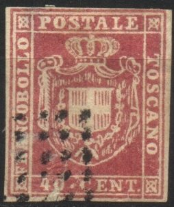
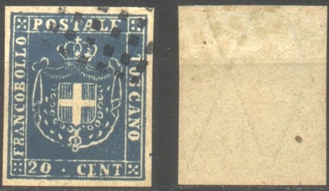
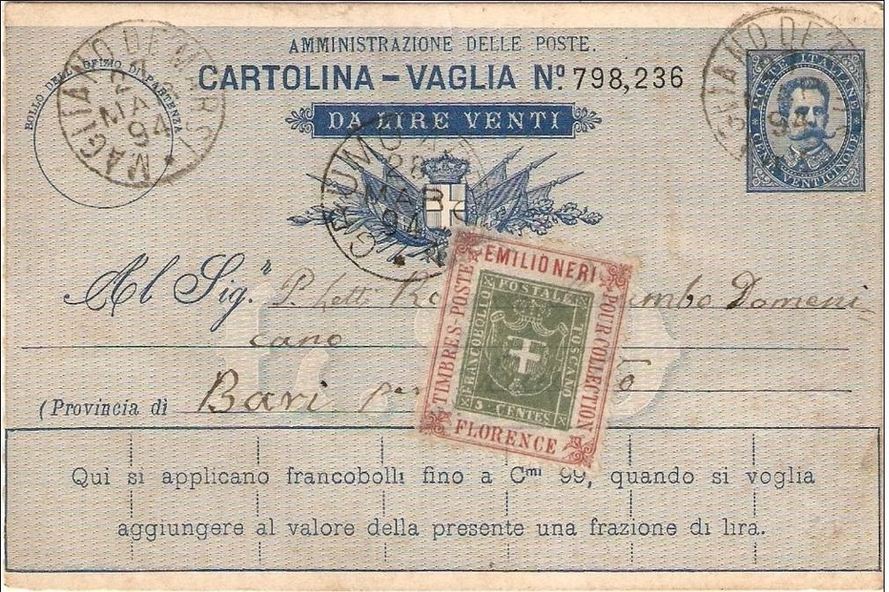
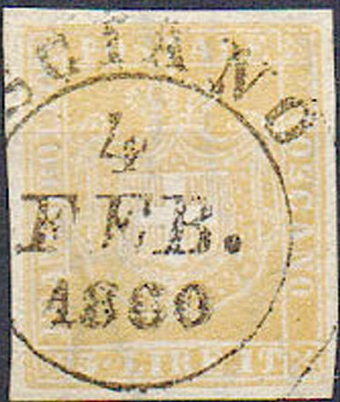
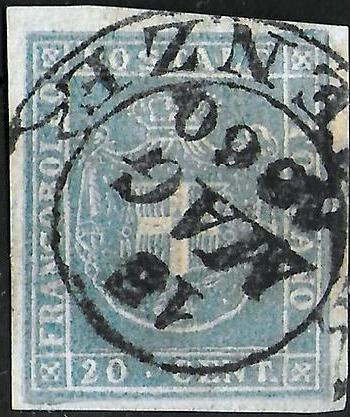
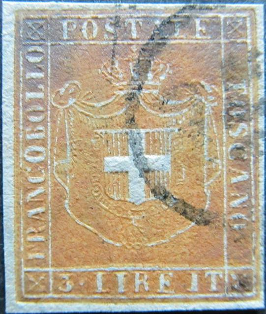
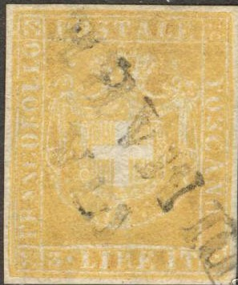
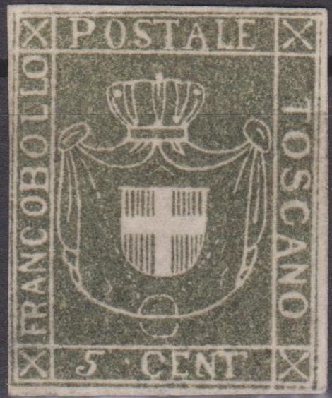
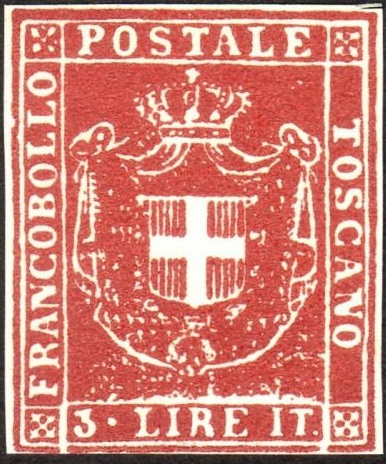
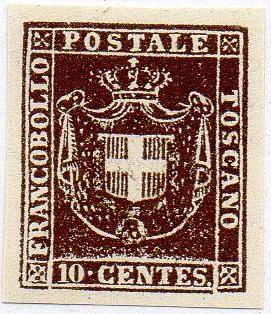

Return To Catalogue - Tuscany 1860 issue and miscellaneous - Tuscany (Italy) 1851 issue - Italy
Note: on my website many of the
pictures can not be seen! They are of course present in the
catalogue;
contact me if you want to purchase the catalogue.
Tuscany 1860 issue and miscellaneous
In the early 20th century already 7 forgeries existed (according to Album Weeds), the first thing that can be checked is the presence of a watermark (but some forgeries have watermark too). The bottom line is always open at two places at the bottom (since the value was added in). The pearls at the extreme right and left of the crown are elongated. Examples of forgeries:

The above forgery is described as the second forgery in Album Weeds. The cross on the crown (or rather the ball that is supposed to be the cross), is situated to the right of the "T" of "POSTALE". In the genuine stamps it is always slightly to the left. The side-folds at the right side end at the beginning of the last "O" of "TOSCANO" (it should go to the end of the "N" of the same word). Many other small differences can be observed. Album Weeds says that at least the values 5, 10, 20 and 40 c exist (the 80 c also exists, see image above). I've seen these forgeries with the cancel with the dots as shown above or an ellipse with parellel lines in it. Album Weeds says that also circular cancels with a cityname and 'P.D.' can be found on these forgeries. I've also seen it with the very peculiar bogus cancel as shown on the 5 c (roughly half a circle with some blotches inside), which indicates this forgery might have been made by the same forger that made some forgeries of Sicily:

Forgery of Sicily with the same bogus cancel.
The bottom line has almost always two white holes in it in the genuine stamps (and in some forgeries aswell) so the white lines coming from above are continued. This was done to add in the value part. In the stamps shown below, these white holes are absent.



(these forgeries can be found with some kind of 'watermark'
consisting of lines)
The cross on the crown is placed to the right of the "T" of "POSTALE" in the above forgeries (it should be slightly to the left). The pearls on the crown are either absent or very blotchy. There are white dots in the mantle. The chain around the central cross is replaced by circles in this forgery. There is a ring at the bottom of the mantle. Album Weeds describes this forgery as the third forgery. It says it is unwatermarked, however, the last stamp has a watermark constisting of crossing lines (see picture above). Maybe not all forgeries have this watermark. The cancels that can be found on these forgeries are typically Spiro cancels: dots or lines as shown above.


A rather primitive forgery, with the lettering different from the
genuine stamps (for example the "S" of
"TOSCANO" or the "P" of "POSTALE");
also the cancel is a bogus cancel, a circle with horizontal
lines. The uncancelled forgery at the right hand side might have
been produced by the same forger (or at least it looks like the
two forgeries were inspired by each other).


Quite blur forgery with circular dots on the crown and many other
design differences; it is cancelled with a red "PD"
cancel in an octagonal or with an unreadable circular towncancel.
I've only seen the 5 c value of this particular forgery type.



(Reduced size)
These are the forgeries offered by Fournier in his 1914 pricelist (5 values for 1.50 Swiss Francs) as second choice forgeries (because the quality is not very good I presume). The 1 c, 5 c, 10 c, 20 c, 40 c and 80 c were offered (the 3 Lire apparently not). These forgeries often have a solid line below the value label, above it some blotchy white space can be seen. A '8' or 'B' alike symbol is found some distance right to the 'R' of "FRANCOBOLLO", above the value. Many white spots are visible in the design (they seem to be at the same location in every forgery); to the left of the "T" of "TOSCANO" there is a white line. Note that the 80 c has a watermark that can be seen from the front of the stamp (I don't know if the other forgeries have a watermark).
Forged cancels made by Fournier as found in 'The Fournier Album
of Philatelic Forgeries', reduced sizes.
A page from a 'Fournier Album of Philatelic Forgeries' showing
some Fournier forgeries of this issue.

I've been told that this forgery of the 3 L value is also a
Fournier forgery, I'm not certain if this information is correct.
This forgery does not resemble the above ones. It has the cancel
"CASTAGNE.. 10 FEB. 1860".



Very dubious items, made by the same forger?
Other forgeries with no white holes in the bottom line:
And some more forgeries with no white holes in the bottom line, they all have the cancel "15 MAG 1860 FIRENZE" and a watermark. I've also seen a 20 c blue (with the '2' very badly done) and even a 5 L orange exists:



Forgeries with cancel "15 MAG 1860 FIRENZE"; one of the
20 c forgeries even appears to be engraved? Also with
"P.D." cancel? Possibly made by the stamp forger
Oneglia.
A forgery with inscription "3 LIRE" instead of "3
LIRE IT."


Forgeries with holes in the bottom, but with missing cross on top
of the crown. Also note the bogus cancels, among them some "VF" Cancelled forgeries.
Other forgeries with holes in the bottom line:

Forgeries of the 3 L:


No dot behind 'IT' and too much drawing at the left top coat (to
the right of the "LL" of "FRANCOBOLLO").
The 3 L is very rare and the genuine stamps should have a dot after the '3', level with the center of the '3' and a dot behind the 'IT', level with the bottom of it (according to Album Weeds). The above two stamps don't have this last dot (for a genuine copy see above).
The forger Usigli (Turin, Italy) made a forgery of the 3 L on original paper, which he obtained from border of genuine sheets (source: Schweiz. Philatelistische Nachrichten in February 1910 or http://briefmarken.ag/), using the original printing plate, but with an altered value part. Sorry, no picture available yet of such a Usigli forgery.
A forgery with watermark:


Forgery of the 3 L with watermark; the stamp next to it is
probably from the same forger. The design is almost 'embossed'.


More clearly printed 3 L forgery, no dot after "IT" and
only 3 pearls on the lower part of the crown (genuine stamps have
5 pearls).


An even stranger heavily engraved forgery. It is listed as type
VIII in Billig's forgery book of Tuscany; it seems only to exist
in the 3 L value.

(Another forgery of the 3 L with watermark and cancel "VIA
DI MARE")

Another forgery of the 3 L value.

Very primitive forgeries, the inscription "5 CENT" is
wrong.
A bogus value of 1 Lire in red:

Also note the bogus "975" numeral cancel

And a 3 L grey bogus issue.
Some forgeries with '2 4 6' printed at the bottom:

(Row of forgeries with bogus cancel)
Peter Winter forgeries
The forger Peter Winter has made forgeries of the values 5 c, 80 c and 3 L. They were made in the 1980's and have a rather 'modern' look. All forgeries of the same value exhibit exactly the same flaws. They are rather common.



Peter Winter forgeries. They usually have the word
"Replik" printed at the back.
Peter Winter even made forgeries in the wrong colors, for example the 80 c green or 3 L red shown above.
 


Other 'modern' forgeries on very white paper, there seems always
to be a white dot in the frameline above the "P" of
"POSTALE". More of these modern
forgeries for other Italian States can be found by clicking here.
Sperati forgery
Sperati made a forgery of the 3 L value, he used a genuine stamp, bleatched out the design, leaving the cancel intact. Then he printed a forged 3 L design on this bleached stamp. His forgeries are very deceptive. They are not very common and quite valuable in itself. Sorry, no picture available yet.


{kind=link}
{kind=link}
{kind=link}
{kind=link}
{kind=link}
{kind=link}
{kind=link}
{kind=link}
{kind=link}
{kind=link}